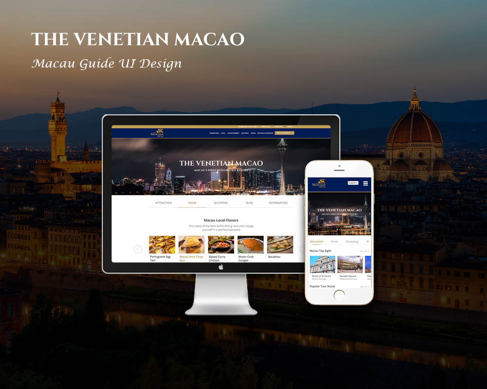
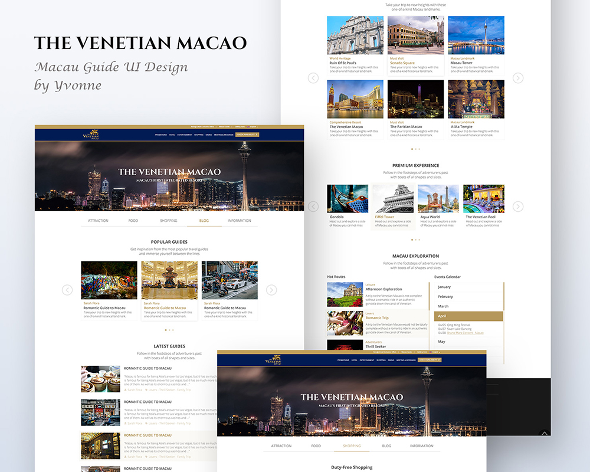
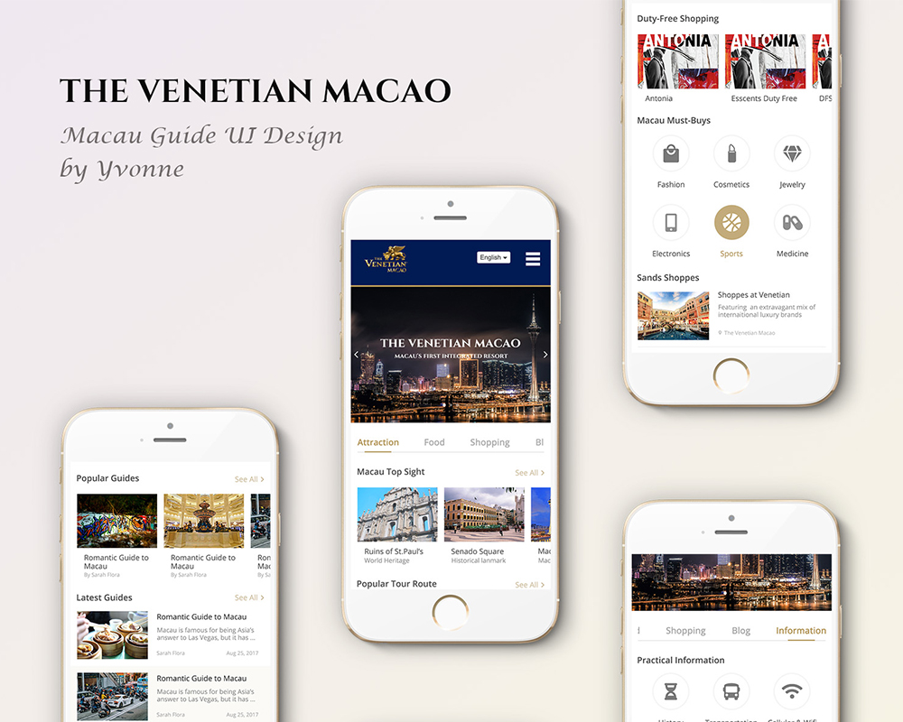
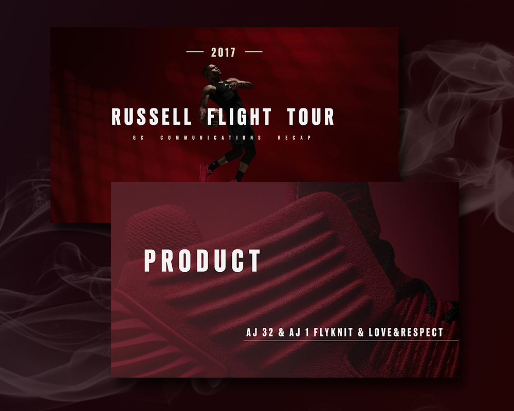
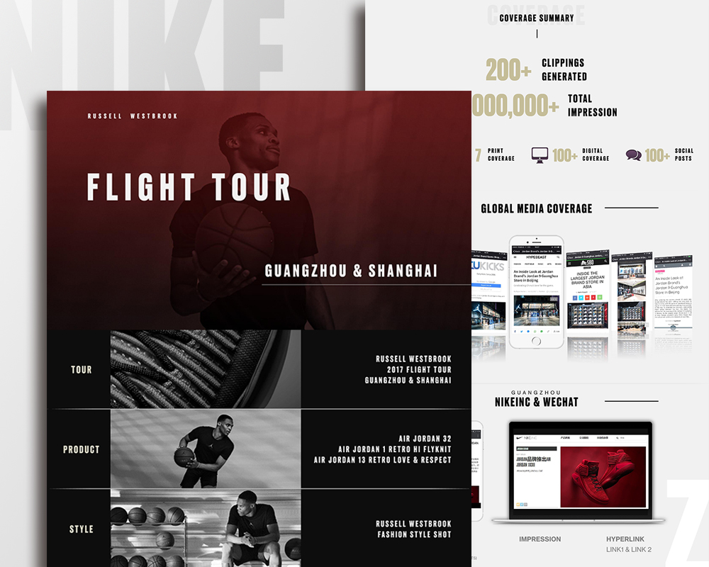
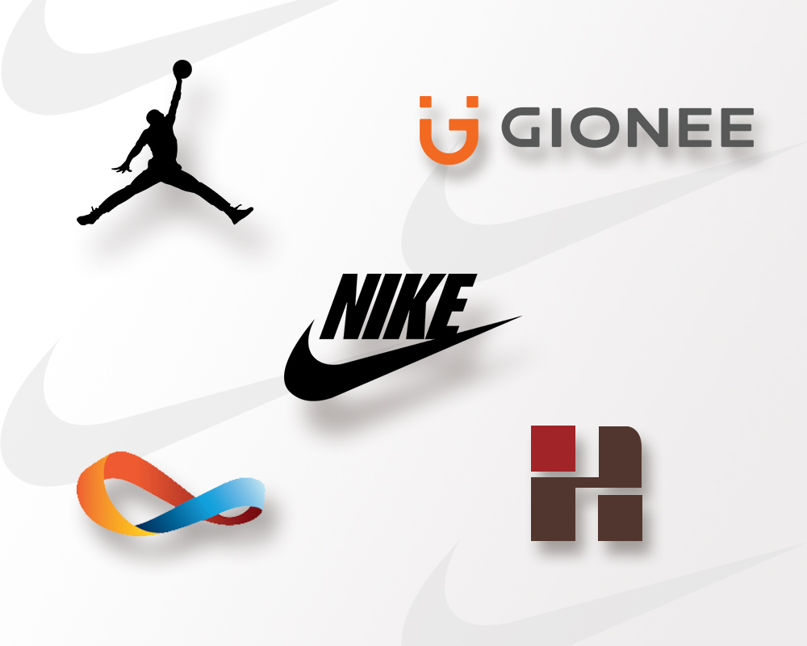

Experience
Sands China
Position: E-commerce Intern (Macau Team)
Time: 2018.02 - 2018.07
Sands China Ltd. is the leading developer, owner and operator of multi-use integrated resorts and casinos in Macao.
As an intern of the E-commerce department, my job was to assist the operation of the five hotel websites, including product information update, press release, video editing, SEO and website UI design, etc.
-

Web UI Design
For The Venetian Macao Hotel
-

Web UI Design
For The Venetian Macao Hotel
-

Mobile UI Design
For The Venetian Macao Hotel
IPG WeberShandwick
Position: PR Intern (Nike Team)
Time: 2017.07 - 2017.11
Weber Shandwick is a leading global public relations firms under IPG.
As a PR intern of the Nike Team, I was responsible for assisting in daily public relations affairs,
including media monitoring, content production and publishment, development of PR strategy, as well as event organization and execution.
-

Event Recap
For Russell Flight Tour
-

Product Report
For Nike & Jordan Brand
-

Brands I Served
For Nike, Jordan, Gionee, etc
Super IELTS
Position: IELTS Teacher (Listening & Reading) | Partime
Time: 2018.04 - 2018.07
Super IELTS is an IELTS education and training institution.
Worked as a part time IELTS teacher in Super IELTS, I aimed at helping students with their IELTS preparation by drawing on my strength of IELTS listening and reading, as well as my rich English tutoring experience .